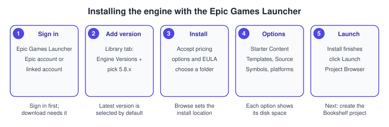

Installing and Building from Source
|
This content was generated with the assistance of AI and should be verified against the official documentation before being relied on in production. |
There are two ways to get Unreal Engine on a machine: a precompiled install through the Epic Games Launcher, or a source build from Epic’s GitHub repository. The Launcher is what almost everybody should use. A source build exists for people who need to change the engine, who target a console, or who want to build a dedicated server with the engine linked statically. This page covers both, the toolchains each operating system needs, the choice of editor for code, and the creation of the project that the rest of this sub-section grows: the Bookshelf.
The facts were checked in November 2026 against the Unreal Engine 5.8 documentation (release 5.8, hotfix 5.8.4). They cover Windows, macOS, Linux and, for the mobile build chain, Android; iOS notes appear where the Xcode requirements matter. Requirements change with every minor version, so read the requirements pages linked in the sections below before you install anything, especially the compiler versions.
Choosing how to install
The Launcher install is the standard method and the only tool needed to install the engine. A source build is needed for console development, because the console platform code is not part of the precompiled build. The Launcher’s Engine Source option installs the source code for viewing only: it can be read and debugged into, but it cannot be modified or rebuilt. Multiple engine versions can be installed side by side, but only one of each version, and Preview builds are for testing, not for production work.
| Aspect | Launcher install | GitHub source build |
|---|---|---|
Needs |
An Epic account, the Launcher, disk space |
An Epic account linked to a GitHub account, Git, a full toolchain, much more disk space and time |
Build time |
A download |
Roughly 10 to 40 minutes of compilation on top of the dependency download, depending on the machine |
Modify the engine |
No |
Yes |
Consoles |
No |
Yes, with the platform SDKs and licences |
Updating |
Install the next version from the Library tab |
Pull the branch, rerun the setup script and project generation, rebuild |
Installing with the Epic Games Launcher

-
Open the Download Unreal Engine page of Epic’s site and choose Download Launcher; run the installer and finish the setup wizard.
-
Start the Epic Games Launcher and sign in. You must be signed in to download the engine. An existing Epic account, a supported third-party account or a new account works.
-
Go to Unreal Engine > Library and click the Add (+) button next to Engine Versions. The latest version is selected by default; the version dropdown offers older ones.
-
Click Install on the engine tile and accept the pricing options and the End User License Agreement.
-
Choose the install location with Browse.
-
Click Options to choose components: Starter Content, Templates, Engine Source, Editor symbols for debugging and target platforms. The dialog shows the disk space of each selection, so check that your drive has room.
-
Click Install, then Launch when the installation finishes.
Select only the platforms you will actually package for. Each platform adds gigabytes, and you can always return to Options later. Keep Editor symbols off unless you debug into engine code; the symbols are very large. The Launcher also installs the Microsoft Visual C++ 2015-2022
Redistributable on Windows; the installers are in Engine/Extras/Redist/en-us inside the installed engine if you need them.
Source: Install Unreal Engine
Building from GitHub source
Linking the accounts
The source repository, https://github.com/EpicGames/UnrealEngine, is private: access is granted to registered Epic users who link their accounts. Create or sign in to your Epic account, open the Connections tab and then Accounts, choose Connect under the GitHub icon and authorise the connection. GitHub then sends an invitation to join the EpicGames organisation, which must be accepted within seven days. Licensees may also obtain source through Epic’s Perforce server. The licence terms that apply are described in Versions, Licensing and History.
Choosing a branch
The repository offers the release branch, which tracks the latest released version, and the ue5-main branch, which is the development line. Use release (or the tag of a specific hotfix) for production work and ue5-main only to experiment with features that are not yet released. Branch and tag names should be checked on the repository, as they follow Epic’s own conventions.
The steps
# Windows, PowerShell. Needs Git, Visual Studio with the {cpp} workload, and a linked GitHub account.
git clone --depth 1 --branch release https://github.com/EpicGames/UnrealEngine.git C:\UE\UnrealEngine
cd C:\UE\UnrealEngine
.\Setup.bat # downloads engine binary content and installs prerequisites
.\GenerateProjectFiles.bat # writes project files to Engine\Intermediate\ProjectFiles
# Open UE5.sln, set Development Editor | Win64, then build the UE5 target.
# The same build from the command line:
.\Engine\Build\BatchFiles\Build.bat UnrealEditor Win64 Development-
Run
Setup.batin the root of the downloaded source (on macOSSetup.command, on LinuxSetup.sh). It downloads the binary content and prerequisites; on Linux it also fetches Epic’s native toolchain. -
Run
GenerateProjectFiles.batin the root directory. The project files are written toEngine\Intermediate\ProjectFiles. Regenerate them after syncing a new build or after deleting theIntermediatefolder. -
Open
UE5.slnin Visual Studio. -
Set the solution configuration to Development Editor and the solution platform to Win64.
-
Right-click the UE5 target and choose Build. Compilation takes roughly 10 to 40 minutes depending on the machine.
-
To start the editor, right-click the UE5 target and choose Set as StartUp Project, then Debug > Start New Instance or press F5.
Note that the first build compiles the whole engine: every later build only recompiles the modules you change, as explained in Project Structure and Modules. Epic recommends the Unreal Build Accelerator (UBA) for distributed compilation, and its Windows requirements page names 12 to 16 cores as a practical baseline for local compiles without distribution.
A project that belongs to a source build records the build’s GUID in its EngineAssociation; right-click the .uproject and choose Switch Unreal Engine version to point it at a different install.
Toolchains per platform
| Platform | Requirements for 5.8 as published by Epic |
|---|---|
Windows |
Windows 11 recommended (Windows 10 version 22H2 minimum for running the editor). Visual Studio 2026 18.0 or newer is recommended; Visual Studio 2022 17.14 is the minimum, and is still needed for Nintendo development and for AGDE versions below v26.1.102. Visual Studio 2019 is unsupported. MSVC 14.38 minimum, 14.50 recommended; Windows SDK 10.0.22621.0 minimum, 10.0.26100 or newer recommended; .NET 10.0 with Visual Studio 2026. LLVM clang on Windows: minimum 18.1.8, preferred 20.1.8. Visual Studio Code and Rider are also supported. |
macOS |
Latest macOS Sequoia recommended, Sonoma 14.5 minimum for running the editor. Apple silicon: M3 recommended, M1 or M2 minimum depending on rendering features; 32 GB of RAM recommended, 16 GB minimum. Xcode is the preferred IDE (Visual Studio Code and Rider also work). For iOS, tvOS, iPadOS and visionOS builds Xcode 26.1.1 is recommended and 26.0 is the minimum; the requirements page warns that Xcode 26.4 is not compatible. The 5.8 release notes name Xcode 15.4 or newer for macOS builds, so read both pages before installing Xcode. |
Linux |
Ubuntu 22.04, Rocky Linux 8 or Red Hat Linux 8 or newer; kernel 4.18 or newer and glibc 2.28 or newer (2.35 or newer avoids slow editor start-up). Compiler clang 20.1.8; Epic’s cross toolchain is version 26, clang 20.1.8 based. Binaries built on Ubuntu 22.04 run on Rocky Linux 8. Recommended Vulkan drivers: RADV 24.2.8 or newer (25.0.0 preferred) on AMD and NVIDIA 570 or newer. |
Android |
Android Studio Koala 2024.1.2 Patch 1, NDK r27c, build-tools 35.0.1, OpenJDK 21.0.3; SDK 35 recommended and 34 the minimum for compiling the engine; target NDK level android-26 and a minimum install API of 26. Google Play sets its own target API deadline, so a project must raise its target itself: see Android and Mobile. |
Rendering features have their own hardware floor: Lumen and MegaLights need Shader Model 6 and an AMD RX 6000 series, Intel Arc A-series or NVIDIA RTX 2000 series or newer GPU on Windows, and Nanite and Virtual Shadow Maps need DirectX 12 with Shader Model 6.6 atomics or Vulkan. Recommended development hardware on Windows is a quad-core 2.5 GHz or faster CPU, 32 GB of RAM and a DirectX 12 card with 8 GB or more of video memory. For the Metal and Vulkan graphics APIs underneath, see Metal: Xcode and Project Setup and Vulkan.
Source: Hardware and Software Specifications, macOS Development Requirements, Linux Development Requirements and Android Development Requirements
Choosing an IDE
Unreal needs a C++ IDE only when the project has C++ code. Visual Studio 2026 is the main choice on Windows; Rider and Visual Studio Code work on every desktop operating system, and Xcode is the preferred IDE on macOS. All of them read the project files that GenerateProjectFiles or the editor writes, and none replaces the build tool: they
call UnrealBuildTool (UBT), which is described in Project Structure and Modules. For the language tooling in general see C++ IDEs and Tools and Build and Tooling; UBT takes the place that CMake has in a typical C++ project.
In Visual Studio, install the Game development with C++ workload and the components that Epic’s requirements page lists for your version (the MSVC toolset and the Windows SDK). A mismatched toolchain is the most common reason for a first build failing.
Creating the Bookshelf project
The Bookshelf is created from the Third Person template with the C++ implementation, so that the project has a Bookshelf module from the start.
-
Launch the engine; the Project Browser opens. Choose a development category (Games, Film, Television, and Live Events or Architecture, Engineering, and Construction, Automotive, Product Design, and Manufacturing), here Games.
-
Select the Third Person template.
-
Under Project Defaults set Implementation to C++, Target Platform to Desktop, Quality Preset to Maximum and tick Starter Content if you want sample meshes and materials. Ray Tracing can stay off.
-
Choose a storage location, enter the name
Bookshelfand click Create. -
The engine generates the project and opens it. A C++ project compiles its module on first open, so allow a few minutes the first time.
Some templates support only one implementation (the Handheld AR template is Blueprint only). The Blueprint option creates the same project without a source folder; you can add C++ later with Tools > New C++ Class, covered in Project Structure and Modules. Import the shared model into the project by dragging bookshelf.glb into the Content Browser, as shown in Editor Tour.
Common mistakes
-
Installing a toolchain that is too old or too new. Visual Studio 2019 is unsupported, and Xcode 26.4 is reported as incompatible. Install the versions in the requirements pages, not the newest.
-
Skipping the C++ workload in Visual Studio, then wondering why a C++ project cannot compile.
-
Expecting the Launcher’s Engine Source to be editable. It is for viewing only.
-
Cloning the repository without linked accounts: the clone fails or returns a not-found message until the GitHub invitation has been accepted.
-
Forgetting to rerun the setup and project generation after pulling a new engine revision: stale dependencies cause obscure build errors.
-
Building the wrong configuration. Open the solution with Development Editor and Win64; a Debug or Shipping configuration of the editor target does not give you the editor you want.
-
Keeping the project and engine on a slow disk. Both the engine and the Derived Data Cache are read heavily; put them on an SSD.
-
Using the Preview build for a shipping project.
Performance notes
-
A full engine build is heavy. Use many cores, an SSD and, for teams, the Unreal Build Accelerator for distributed compilation. Incremental builds of a game module are far faster than the first build of the engine because only changed modules are rebuilt.
-
Install only the platforms and symbols you need: extra platforms and debug symbols cost disk space and download time without making the editor any faster.
-
The editor itself needs a capable GPU for Lumen, Nanite and Virtual Shadow Maps. On weaker machines, lower the viewport’s scalability level rather than uninstalling features.
-
Slow editor start-up on Linux can come from an older glibc; Epic recommends glibc 2.35 or newer.
What changed recently
| Version | Change |
|---|---|
5.8 |
Visual Studio 2026 is the recommended IDE with Visual Studio 2022 17.14 as the minimum; Visual Studio 2019 is unsupported. The clang version moves to 20.1.8 on Linux and 20.1.8 is preferred on Windows. Windows hardware guidance names Windows 11 as recommended. Android Studio Koala with NDK r27c. |
5.8 |
Epic’s requirements pages recommend UBA for distributed compilation. Xcode 26.1.1 is recommended for Apple mobile platforms and macOS builds work with Xcode 15.4 or newer per the release notes (this was lowered from the 5.6 requirement). |
5.8 |
Template fixes: the BlankProgram template now sets default build settings so it builds outside the engine folder, and blank projects can Quick Launch on Android. |
UE5.0 |
Visual Studio 2015 and 2017 and 32-bit platforms stopped being supported. |
Where the books are outdated
-
Toolchains and Hot Reload. Nitish Misra’s Learning Unreal Engine Android Game Development (chapters 1 and 2) and Benjamin Carnall’s Unreal Engine 4.X By Example use Visual Studio 2013 and 2015 and the Hot Reload workflow. Today Visual Studio 2026 is recommended (2022 17.14 is the minimum), and Live Coding is the default way to rebuild C++ while the editor runs.
-
Android setup. The Android book also teaches NDK r9c and NVPACK. 5.8 uses Android Studio Koala, NDK r27c, SDK 35 and OpenJDK 21; see the table above.
-
UE5.0 era installation. Zhenyu George Li and E. Wyn Roberts' Unreal Engine 5 Game Development with C++ Scripting (chapters 1 and 2) targets UE 5.0 and Visual Studio 2022. The Launcher steps are still recognisable, but 5.8 expects newer compilers and SDKs.
-
UDK installation. Rachel Cordone’s Unreal Development Kit Game Programming with UnrealScript: Beginner’s Guide explains installing the 2011 UDK. UDK is no longer distributed; the Epic Games Launcher is the entry point today.